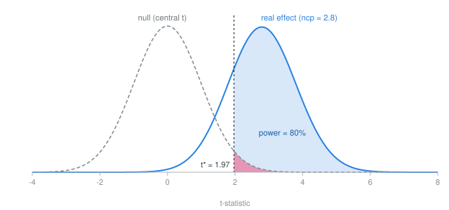
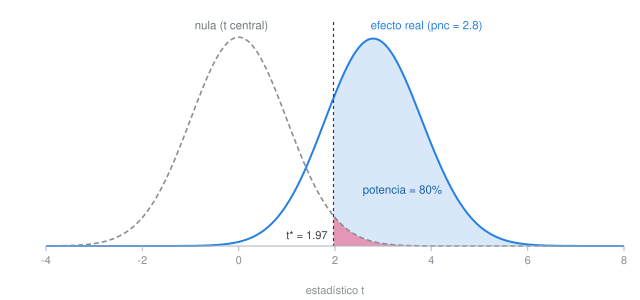

Statistical Power
How many respondents do I need for my study? One way to think about this is in terms of statistical power. If there is an effect of your treatment, you want to be able to detect it and distinguish it from zero.
Statistical power is the probability that your study detects an effect that is really there, the true positive rate. Statistical power depends on three things:
- the size of the effect you are trying to detect,
- the amount of noise in your outcome, and
- the size of your sample (number of respondents).
One way to increase power is to increase the sample size. But note that these three things combine into one quantity. If your treatment moves the outcome by \delta and the outcome has standard deviation \sigma, the standardized effect is d = \delta / \sigma, and power is driven by
\text{ncp} = d \sqrt{n/2} = \frac{\delta}{\sigma}\sqrt{n/2}.
What is “ncp”?
Read it as the true effect expressed in standard errors: roughly the t-statistic you should expect to get. Under the null, your t-statistic follows the usual central t distribution, centered on zero. When there is a real effect it follows a noncentral t — same family, shifted away from zero — and the noncentrality parameter is how far it shifts. Power is the area of that shifted distribution past your critical value, so a noncentrality near 2.8 gives 80% power at α = 0.05. The formula above is the noncentrality parameter for the design assumed here: two groups of equal size, with n observations in each.

You have three levers to increase power:
- Make the effect bigger — design a stronger, clearer treatment.
- Make the noise smaller — block, add covariates, use a better-measured outcome.
- Collect more data — increase n.
\delta and \sigma enter as a ratio: halving the noise buys exactly what doubling the effect buys. And n enters under a square root — quadrupling your sample only doubles the signal. This is why “collect more data” is usually the most expensive lever, and why hard thinking about your treatment and your measurement is usually the cheapest.
Power Calculator
Use the calculator to see how changing these quantities affects statistical power:
¿Cuántos encuestados necesito para mi estudio? Una forma de pensarlo es en términos de la potencia estadística. Si tu tratamiento tiene un efecto, quieres poder detectarlo y distinguirlo de cero.
La potencia estadística es la probabilidad de que tu estudio detecte un efecto que realmente existe, la tasa de verdaderos positivos. La potencia estadística depende de tres cosas:
- el tamaño del efecto que buscas detectar,
- la cantidad de ruido en tu variable de resultado, y
- el tamaño de tu muestra (número de encuestados).
Una forma de aumentar la potencia es aumentar el tamaño de la muestra. Pero nota que estas tres cosas se combinan en una sola cantidad. Si tu tratamiento mueve el resultado en \delta y el resultado tiene desviación estándar \sigma, el efecto estandarizado es d = \delta / \sigma, y la potencia depende de
\text{pnc} = d \sqrt{n/2} = \frac{\delta}{\sigma}\sqrt{n/2}.
¿Qué es “pnc”?
Interprétalo como el efecto verdadero expresado en errores estándar: aproximadamente el estadístico t que deberías esperar obtener. Bajo la hipótesis nula, tu estadístico t sigue la distribución t central habitual, centrada en cero. Cuando existe un efecto real, sigue una t no central —de la misma familia, pero desplazada del cero— y el parámetro de no centralidad (pnc) indica qué tan lejos se desplaza. La potencia es el área de esa distribución desplazada más allá de tu valor crítico, así que un parámetro de no centralidad cercano a 2.8 da 80% de potencia con α = 0.05. La fórmula de arriba es el parámetro de no centralidad para el diseño que se supone aquí: dos grupos del mismo tamaño, con n observaciones en cada uno.

Tienes tres palancas para aumentar la potencia:
- Agrandar el efecto — diseña un tratamiento más fuerte y más claro.
- Reducir el ruido — usa bloques, añade covariables, mide mejor tu resultado.
- Recolectar más datos — aumenta n.
\delta y \sigma entran como una razón: reducir el ruido a la mitad logra exactamente lo mismo que duplicar el efecto. Y n entra bajo una raíz cuadrada — cuadruplicar tu muestra solo duplica la señal. Por eso “recolectar más datos” suele ser la palanca más cara, y pensar bien tu tratamiento y tu medición suele ser la más barata.
Calculadora de potencia
Usa la calculadora para ver cómo cambia la potencia estadística al modificar estas cantidades:
Effect Size
In the equation above, \delta and \sigma take whatever units your outcome uses — scale points, pesos, vote share — as long as the two agree. Their ratio has none: d = \delta/\sigma is measured in standard deviations, so d = 0.2 means the treatment moves the outcome one-fifth of a standard deviation.
That ratio is Cohen’s d. You can use Cohen’s d to approximate your effect size by comparing your design to existing research. Cohen’s benchmarks are: 0.2 small effect, 0.5 medium effect, 0.8 large effect (Cohen 1992). But use these with caution. Effects in political behavior can fall well under 0.2. Designing around 0.5 can lead to an underpowered study. Anchor your guess in studies closest to your own design instead, then shade down.
What the calculator assumes
The design is the simplest useful one: two groups, equal sizes, comparing means, two-sided test. Power comes from the exact noncentral t distribution rather than a large-sample normal approximation, so the numbers match R’s power.t.test().
Three things worth knowing about how the levers are modelled:
Effect size is the effect you want to detect, not the effect you hope to find. Enter the smallest difference that would still matter substantively. Powering a study on an optimistic guess is the most common way to end up underpowered — and the effect you can just detect is, by construction, one you can only estimate imprecisely.
Noise reduction is expressed as R^2, the share of outcome variance explained by your blocking variables or covariates. Pre-treatment measures of the outcome itself are usually the most powerful covariates available — the statistical argument for a pre-test (see Clifford et al. 2021).
Power is the upper-tail probability only. Rejecting the null in the wrong direction is not a success, so it does not count here. This is also R’s convention, and it is why power approaches \alpha/2, not \alpha, as the effect goes to zero.
The calculator does not subtract degrees of freedom for covariates. With k covariates the residual df is 2n - 2 - k; the effect on power is negligible unless k is large relative to n, but it is not exactly zero.
Checking it against R
Every number here can be reproduced in R. For the default design — \delta = 0.3, \sigma = 1.5, n = 150 per group:
power.t.test(n = 150, delta = 0.3, sd = 1.5,
sig.level = 0.05, type = "two.sample")
# With covariates explaining 30% of outcome variance,
# the residual SD shrinks by sqrt(1 - 0.30):
power.t.test(n = 150, delta = 0.3, sd = 1.5 * sqrt(1 - 0.30),
sig.level = 0.05, type = "two.sample")For designs beyond two-group comparisons of means, use the pwr package, or simulate: generate data under an assumed effect, run your actual analysis, repeat a few thousand times, count how often you reject. Simulation is slower, but it handles the clustering, interactions, and non-normal outcomes that no closed-form calculator covers.
Tamaño del efecto
En la ecuación de arriba, \delta y \sigma toman las unidades que use tu resultado —puntos de escala, pesos, porcentaje de votos— siempre que ambas coincidan. Su razón no tiene unidades: d = \delta/\sigma se mide en desviaciones estándar, así que d = 0.2 significa que el tratamiento mueve el resultado un quinto de una desviación estándar.
Esa razón es la d de Cohen. Puedes usar la d de Cohen para aproximar el tamaño de tu efecto comparando tu diseño con investigaciones ya publicadas. Los puntos de referencia de Cohen son: 0.2 efecto pequeño, 0.5 efecto mediano, 0.8 efecto grande (Cohen 1992). Pero úsalos con cautela. Los efectos en comportamiento político pueden quedar muy por debajo de 0.2. Diseñar pensando en 0.5 puede llevar a un estudio subpotenciado. Ancla tu estimación en los estudios más cercanos a tu propio diseño y luego ajústala a la baja.
Qué supone la calculadora
El diseño es el más simple y útil: dos grupos, tamaños iguales, comparación de medias, prueba de dos colas. La potencia se calcula con la distribución t no central exacta, no con una aproximación normal de muestra grande, así que los números coinciden con power.t.test() de R.
Tres cosas que vale la pena saber sobre cómo se modelan las palancas:
El tamaño del efecto es el que quieres detectar, no el que esperas encontrar. Ingresa la diferencia más pequeña que aún importaría sustantivamente. Calcular la potencia con una estimación optimista es la manera más común de terminar subpotenciado —y el efecto que apenas puedes detectar es, por construcción, uno que solo puedes estimar con imprecisión.
La reducción de ruido se expresa como R^2, la proporción de la varianza del resultado explicada por tus variables de bloqueo o covariables. Las mediciones del resultado antes del tratamiento suelen ser las covariables más poderosas disponibles —el argumento estadístico a favor de un pre-test (véase Clifford et al. 2021).
La potencia es solo la probabilidad de cola superior. Rechazar la hipótesis nula en la dirección equivocada no cuenta como éxito, así que aquí no se contabiliza. Esta también es la convención de R, y por eso la potencia se acerca a \alpha/2, no a \alpha, cuando el efecto tiende a cero.
La calculadora no resta grados de libertad por las covariables. Con k covariables, los grados de libertad residuales son 2n - 2 - k; el efecto sobre la potencia es despreciable salvo que k sea grande en relación con n, pero no es exactamente cero.
Verificación con R
Cada número aquí se puede reproducir en R. Para el diseño predeterminado —\delta = 0.3, \sigma = 1.5, n = 150 por grupo—:
power.t.test(n = 150, delta = 0.3, sd = 1.5,
sig.level = 0.05, type = "two.sample")
# Con covariables que explican 30% de la varianza del resultado,
# la DE residual se reduce por sqrt(1 - 0.30):
power.t.test(n = 150, delta = 0.3, sd = 1.5 * sqrt(1 - 0.30),
sig.level = 0.05, type = "two.sample")Para diseños más allá de la comparación de medias entre dos grupos, usa el paquete pwr, o simula: genera datos bajo un efecto supuesto, corre tu análisis real, repite unos cuantos miles de veces y cuenta cuántas veces rechazas. La simulación es más lenta, pero maneja el agrupamiento (clustering), las interacciones y los resultados no normales que ninguna calculadora de forma cerrada cubre.